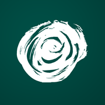
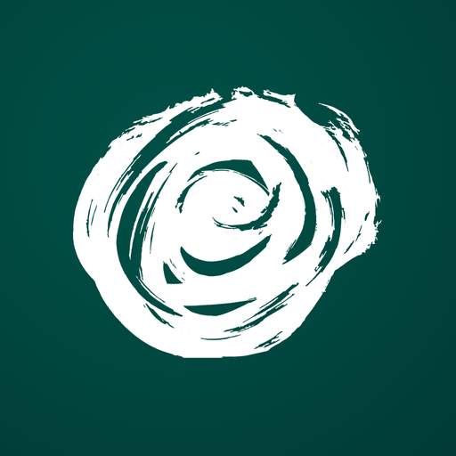
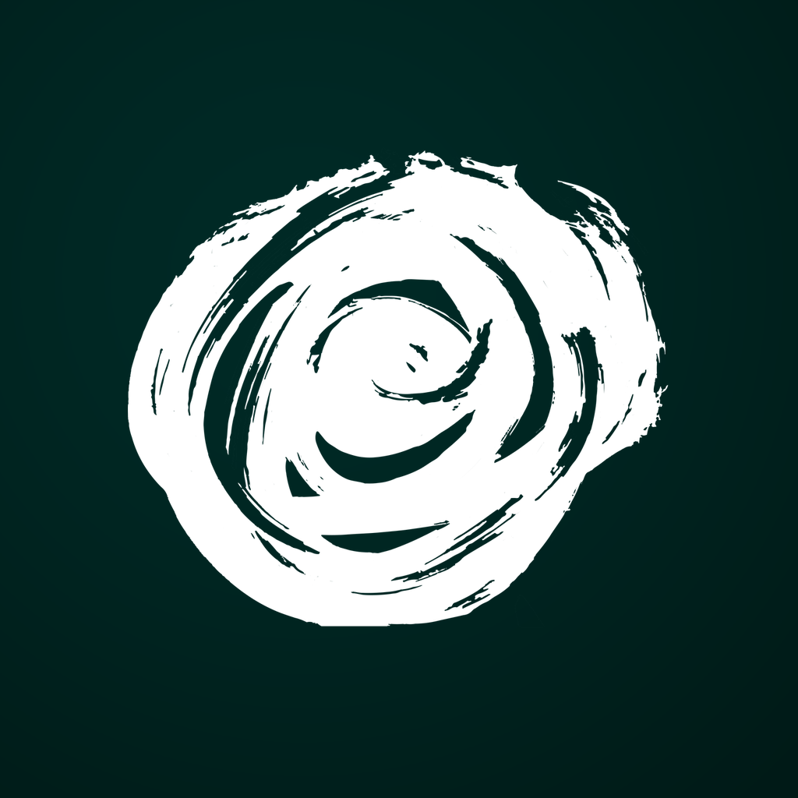
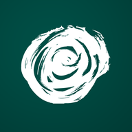
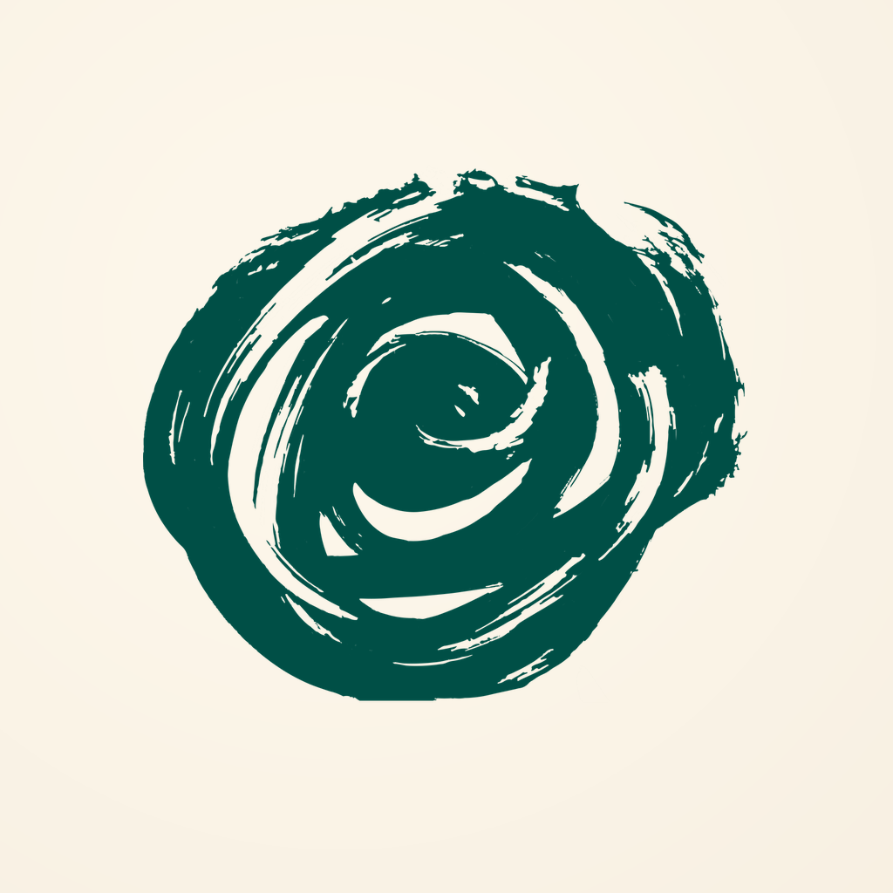
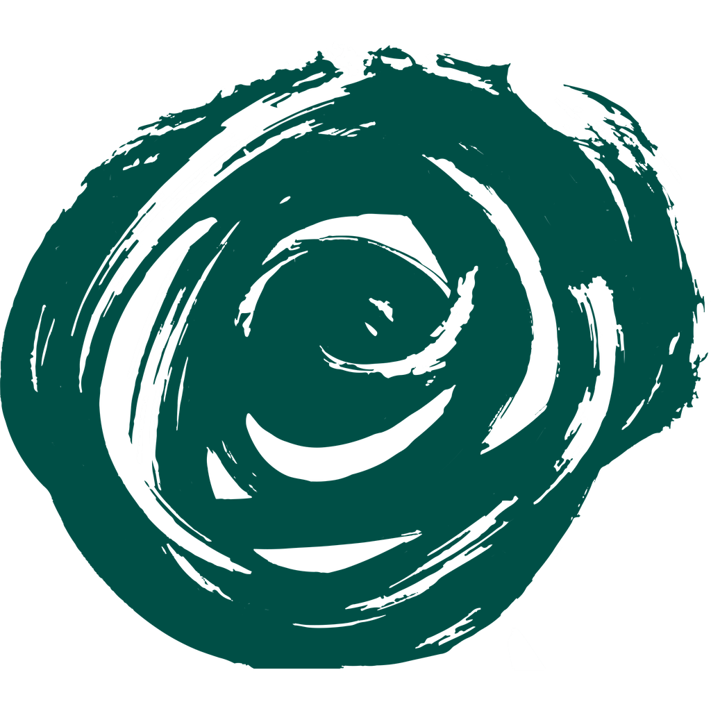

Design documentation · v1.0 · 2026-04-19
Visit Bulgaria — app icon system
Production iOS + Android launcher icons + full web/browser/PWA asset set, all derived from
brand-bar_icon.svg.
Wordmark stripped, rose isolated programmatically, white-rose-on-teal primary — aligns with the
cool-neutral product UI (white cards, #f4f6f7 pages).
Rebuild is deterministic.
Overview
What’s in this set
Every asset is generated from one master PNG and one transparent rose layer. iOS ships three appearances (light, dark, tinted). Android ships six density legacy PNGs, three adaptive layers (foreground, background, monochrome), and the Play Store listing asset.
iOS appearances
3 × 1024 px PNG
ios/AppIcon.appiconset/
Android legacy
mdpi · hdpi · xhdpi · xxhdpi · xxxhdpi
android/mipmap-*/
Android adaptive
Foreground · background · monochrome
android/mipmap-xxxhdpi/
Store assets
App Store 1024 · Play Store 512
master/ · android/playstore-512.png
Master artwork
1024 × 1024 · source of truth
Every platform render is downsampled from the 1024 master. iOS accepts it as-is; Android composites foreground + background layers for adaptive icons; legacy densities are bicubic downsamples of the master.

Primary — white rose on deep teal
Aligns the icon with the product’s cool-neutral surfaces (white cards, #f4f6f7 pages). Continuous vibe from icon into app.
- Canvas
- 1024 × 1024 px, sRGB, opaque
- Rose size
- 68% of canvas edge
- Background
- Radial
#004F46 → #003832 - Rose colour
#FFFFFF(white)- Contrast
- 14.38 : 1 — exceeds WCAG AAA
- Safe area
- ≤ 80% (Apple HIG) · ≤ 66% (Android)
- File
- master/primary-1024.png
Colour tokens
Icon palette
Icon colours are intentionally distinct from the UI palette (#00BBA7 teal). Lockup fidelity to the brand bar takes priority here.
Logo teal
#004F46 · rgb(0, 79, 70)
Teal shadow
#003832 · rgb(0, 56, 50)
Rose white · primary
#FFFFFF · rgb(255, 255, 255)
Cream · alt only
#F7EFE1 · lockup-faithful alt bg
Web · Browser tabs & bookmarks
Classic favicons — 16 · 32 · 48 · 64 px
Every size rendered at actual pixel dimensions. 16 px is the browser-tab bucket; 32 px covers HiDPI tabs and bookmark bars; 48 px is the Windows site-shortcut bucket; 64 px covers desktop shortcuts. All bundled as a multi-size .ico for legacy fallback.
In context · browser tab
Web · Apple touch icon
180 × 180 — Safari “Add to Home Screen”
When a user pins the site to the iOS home screen, Safari uses this PNG instead of a rasterised tab-favicon. Apple applies its own squircle mask — ship it full-bleed.

web/apple-touch-icon.png · 180 × 180 · opaque · no alpha
Also covers
- · iOS Safari Add to Home Screen (primary use)
- · macOS Safari start-page tiles
- · Messages link-preview icon
- · Some Android browsers that honour
apple-touch-icon
Do not
- · Pre-round corners — Safari masks it
- · Ship alpha — opaque 1024-downsample only
Web · PWA & installable
192 · 512 · maskable variants
Progressive Web App installs pull icons from site.webmanifest.
Standard icons render at their native aspect; maskable icons are full-bleed 1024-downsamples the launcher is free to clip
(Chrome, Samsung Internet, installed TWA apps on Android). The rose at 68% fits inside the 80% maskable safe zone.
icon-192
Chrome install banner · short-cut
web/icon-192.png

icon-512
Splash screen · high-DPI display
web/icon-512.png
maskable-192
Circle mask · Android launcher
purpose: "maskable"
maskable-512
Squircle mask · Samsung / OnePlus
purpose: "maskable"
site.webmanifest
// web/site.webmanifest — served at /site.webmanifest { "name": "Visit Bulgaria", "short_name": "Visit BG", "start_url": "/", "display": "standalone", "theme_color": "#004F46", "background_color": "#004F46", "icons": [ { "src": "/icon-192.png", "sizes": "192x192", "type": "image/png" }, { "src": "/icon-512.png", "sizes": "512x512", "type": "image/png" }, { "src": "/icon-maskable-192.png", "sizes": "192x192", "type": "image/png", "purpose": "maskable" }, { "src": "/icon-maskable-512.png", "sizes": "512x512", "type": "image/png", "purpose": "maskable" } ] }
Web · Integration
Drop-in <head> snippet
Copy into every page template. Paths assume assets are served from the site root.
<!-- Visit Bulgaria — favicons, PWA, social --> <link rel="icon" href="/favicon.ico" sizes="any"> <link rel="icon" type="image/png" sizes="32x32" href="/favicon-32.png"> <link rel="icon" type="image/png" sizes="16x16" href="/favicon-16.png"> <link rel="apple-touch-icon" sizes="180x180" href="/apple-touch-icon.png"> <link rel="manifest" href="/site.webmanifest"> <meta name="theme-color" content="#004F46"> <meta name="msapplication-TileColor" content="#004F46"> <meta name="msapplication-TileImage" content="/mstile-150.png"> <!-- Open Graph / social --> <meta property="og:image" content="/og-image.png"> <meta property="og:image:width" content="1200"> <meta property="og:image:height" content="630"> <meta property="og:image:alt" content="Visit Bulgaria"> <meta name="twitter:card" content="summary_large_image"> <meta name="twitter:image" content="/og-image.png">
Files to deploy
Rebuild: ./venv/bin/python3 app-icon/_work/build_web_icons.py
iOS · iPhone
Pixel-accurate rendered sizes
Each tile renders the 1024 master at the exact pixel dimensions iOS uses on-device. From left to right these correspond to Home (60 pt), Spotlight (40 pt), Settings (29 pt), and Notifications (20 pt), each at @2x and @3x.
iOS · iPad
Pixel-accurate rendered sizes
iPad uses a larger Home icon (76 pt, or 83.5 pt on Pro) plus the same Spotlight/Settings/Notification sizes at @1x and @2x.
iOS · Appearance
Light · Dark · Tinted
iOS 18+ supports three appearances selectable by the user from the home-screen editor. The tinted variant is a grayscale silhouette that the system recolours using its accent palette.
Light
Default appearance — white rose on deep teal.
icon-1024.png

Dark
Slightly desaturated teal against a dark home screen.
icon-1024-dark.png
Tinted
Grayscale silhouette. System applies user-selected tint.
icon-1024-tinted.png
iOS · Context
Home screen at 68 px tile size
How the icon sits among sibling apps at the rendered 60 pt @3x size — the scenario that matters most.
iOS · Integration
Xcode asset catalog
Drop the asset catalog into the Xcode project; modern Xcode generates every device render from the 1024 master.
# Replace the default asset catalog cp -R ios/AppIcon.appiconset/ <App>/Assets.xcassets/AppIcon.appiconset/ # Build settings App Icon & Launch Screen ▸ App Icon Source: "AppIcon" Include All App Icon Assets: off # iOS 26 / Liquid Glass (optional, not included here) Use Icon Composer with master/rose-foreground-1024.png + primary-1024.png to produce a layered .icon bundle.
Android · Adaptive layers
Foreground · Background · Monochrome
Android 8+ composes two 108 dp layers and applies a launcher-chosen mask. Android 13+ additionally renders a monochrome silhouette tinted by the Material You palette.

Foreground — white rose with alpha
108 dp canvas, rose inside the 66 dp safe circle. Transparent background.
android/mipmap-xxxhdpi/ic_launcher_foreground.png
Background — solid teal
Flat colour per Android guidance (launcher masks crop unpredictably — gradients look off-centre after cropping).
android/mipmap-xxxhdpi/ic_launcher_background.png
Monochrome — themed layer
Single-colour alpha silhouette. Material You recolours using the system palette.
android/mipmap-xxxhdpi/ic_launcher_monochrome.png
Android · Launcher masks
One adaptive icon, five masks
Foreground and background are composed together, then the launcher clips the composite to its preferred shape. The rose is sized to survive every mask — including the aggressive circle and teardrop cuts.
Circle
Pixel Launcher · Samsung One UI (optional)
Squircle
Samsung One UI default · OnePlus OxygenOS
Rounded square
Nova Launcher · Action Launcher
Teardrop
Stock Huawei EMUI · custom launchers
Square
Legacy / tablets · some OEM skins
Android · Density grid
Legacy PNGs at actual pixel sizes
Pre-Android 8 fallback PNGs shipped in every density bucket. Each bucket here is rendered at its real pixel size — this is the ground truth for how the icon renders on legacy Android / devices that don’t honour the adaptive spec.

Round variant
Pre-baked circular fallback for launchers that request roundIcon.
ic_launcher_round.png
Rendered foreground stack
Adaptive composite — the source of truth on modern Android.
mipmap-xxxhdpi/ic_launcher_foreground.png
Bucket coverage
- · mdpi — reference / some Wear OS surfaces
- · hdpi — older budget phones
- · xhdpi — mid-range 2015–2018
- · xxhdpi — most phones 2018–today
- · xxxhdpi — flagships, adaptive layer source
Android · Material You
Themed-icon preview across wallpaper palettes
Android 13+ re-tints the monochrome layer based on the wallpaper-derived palette. Preview below simulates four common palette outcomes — the real device picks something closer to the user’s wallpaper.
#1F3B63
#2E7D6C
#7A4A2E
#5A2E4F
#1C1C1E
Android · Safe-area guide
66 dp safe circle · 72 dp viewport on a 108 dp canvas
Adaptive icons use a 108 dp canvas; the outer 18 dp around the center exists for launcher parallax and cannot be relied on. The 66 dp safe circle is the zone where every launcher mask is guaranteed to preserve content; the 72 dp viewport is what typical home-screen rendering shows.
Why it matters
The rose is sized at 60% of the adaptive canvas (~65 dp) so it fits comfortably inside the 66 dp safe circle. That leaves 7 dp of breathing room — enough for every launcher mask in the wild (circle, teardrop, squircle, rounded-square, square) to clip without touching the rose silhouette.
Sanity checks
- · Rose bounding box ≤ 60% of 108 dp canvas
- · Entire rose sits inside 66 dp safe circle
- · Background is a single solid colour
- · No text or fine detail — would fail below 48 px
Android · Integration
Android Studio · Manifest wiring
# Drop the mipmap folders into your app cp -R android/mipmap-* app/src/main/res/ # AndroidManifest.xml <application android:icon="@mipmap/ic_launcher" android:roundIcon="@mipmap/ic_launcher_round"> # Themed icon wires automatically via mipmap-anydpi-v26/ic_launcher.xml # <monochrome android:drawable="@mipmap/ic_launcher_monochrome" /> # Play Store upload Hi-res icon ▸ android/playstore-512.png # 512×512, 32-bit, opaque
Store assets
App Store · Play Store listing
Marketing renders live at full resolution. The App Store uses the same 1024 master as the in-device asset; the Play Store takes a dedicated 512 variant.
App Store marketing
Displayed on product pages, search results, and Today tab. Apple re-applies the squircle mask server-side — do not pre-round the corners.
1024 × 1024 · sRGB · opaque · no alpha
Play Store listing
Displayed as the Hi-res icon on the Play Console. Full-bleed, no transparency, no manual rounding — the store applies its own mask.
512 × 512 · 32-bit PNG · opaque
Source
Master, rose layers, alt
Every platform render is downstream of these five files. Rebuild any subset with ./venv/bin/python3 app-icon/_work/build_icons.py.
Brand-bar lockup
Full lockup — rose + БЪЛГАРИЯ wordmark. Wordmark is algorithmically dropped.
../brand-bar_icon.svg
Primary master · 1024 px
White rose on deep teal — the canonical app icon.
master/primary-1024.png

Alt · brand-bar faithful
Teal rose on cream — use when brand compliance takes priority over home-screen punch.
master/alt-brand-faithful-1024.png

Rose foreground · isolated
Transparent-background rose silhouette — recoloured to white / cream / black by downstream renders.
master/rose-foreground-1024.png
Rose monochrome
Transparent-background rose in black — the tinted / Material You source.
master/rose-monochrome-1024.png
iOS tinted
Grayscale silhouette for iOS 18+ tinted appearance.
ios/AppIcon.appiconset/icon-1024-tinted.png
Compliance
Platform-by-platform checklist
Everything below is verified at build time by _work/build_icons.py. Green ticks are assertions, not aspirations.
Apple HIG · iOS
- 1024 × 1024 sRGB, opaque (no alpha)
- Rose ≤ 80% of canvas — shadow ring + squircle bite clears
- No text, no Apple UI replicas
- Dark + tinted appearances provided
- Xcode 14+ single-size asset catalog
Android adaptive icon
- 108 dp × 108 dp foreground + background
- Foreground inside 66 dp safe circle (60% canvas)
- Solid-colour background (mask-safe)
- Round variant pre-baked for legacy launchers
- Monochrome layer ≤ 1 colour + alpha
Material You · Themed
- Monochrome shipped at xxxhdpi
- Wired via
mipmap-anydpi-v26/ic_launcher.xml - Reads correctly against every wallpaper-derived palette
Store listings
- App Store 1024 — opaque, no alpha, no pre-rounded corners
- Play Store 512 — 32-bit PNG, opaque, full-bleed
Accessibility
- White on teal contrast 14.38 : 1 — exceeds WCAG AAA (7:1)
- Shape-identifiable at 40 × 40 px (Notification)
- Monochrome silhouette works without colour
Determinism
- All outputs regenerate from
brand-bar_icon.svg - Rose isolation via ink-density bbox + CC filter — no manual masking
- Rebuild command:
./venv/bin/python3 app-icon/_work/build_icons.py